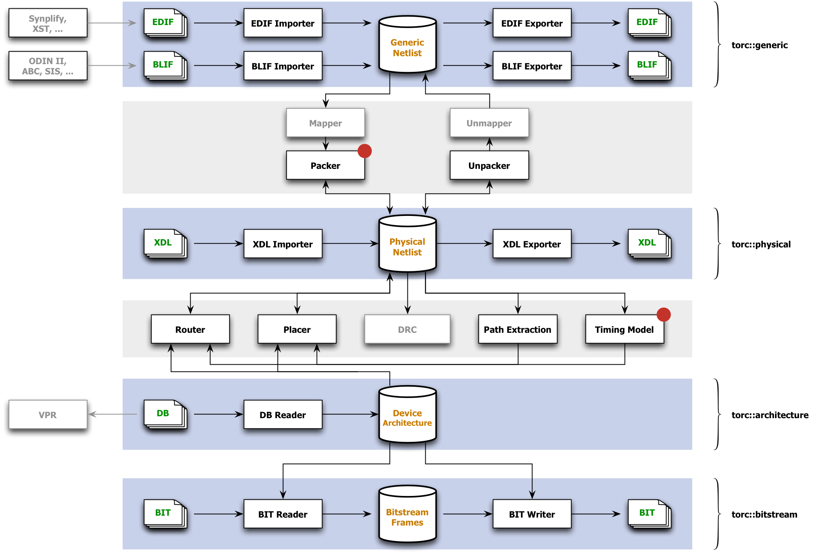

Documentation
Most of the documentation currently available for Torc comes from Doxygen. Example code and unit tests are also sources of information about Torc and its use.
Structure
Torc consists of four main APIs, shown against blue backgrounds, and associated CAD tools dependent on those APIs, shown against gray backgrounds. Blocks with a red dot in the upper right corner are not yet complete. Blocks that are grayed-out are either unscheduled at present, or are external tools that Torc would like to interface with.
{kind=link}
The Generic Netlist API works with design netlists that are not yet mapped to a physical device. This most commonly consists of EDIF netlists in the commercial world, and BLIF netlists in the academic world.
The Physical Netlist API works with designs that have been mapped to a physical device, and which may or may not include placement and routing information. The supported XDL format is nominally specific to Xilinx devices, but should be flexible enough to support a broad range of other FPGA architectures.
The Device Architecture API provides logic and wiring information for underlying commercial devices, or for custom architecture devices. The API provides a standard interface that can be used by routers, placers, or other tools, regardless of the underlying device.
The Bitstream Frames API works with configuration bitstreams for Xilinx FPGAs, and can be used to inspect, modify, merge, or split bitstreams. Note that Torc understands bitstream headers, packets, and frame addressing, but has no knowledge of configuration frame internals.